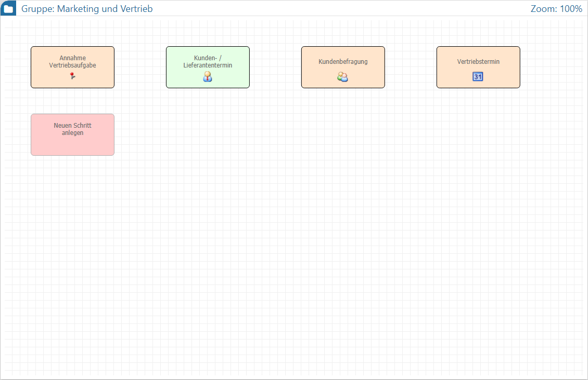
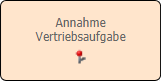
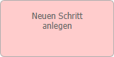
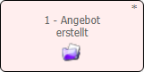
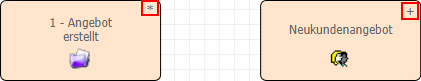

Startschritt- und Aktionsübersicht
Wurde eine Gruppe ausgewählt, so werden im Graphen die einzelnen Startschritte (d.h. die Workflows bzw. CRM-Prozesse) und die CRM-Aktionen angezeigt. Die Navigation, d.h. der Wechsel in einen Workflow bzw. eine CRM-Aktion, erfolgt durch Anwahl des Objekts per Maus.
Hinweis
Befindet man sich in der Workflowübersicht, so kann mit Hilfe des Buttons "Startschritte" in diese Übersicht zurückgewechselt werden.

Innerhalb der Übersicht werden die einzelnen Objekte (Startschritte und CRM-Aktionen) zur besseren Unterscheidung farblich gekennzeichnet. Zusätzlich steht im Bearbeitungsmodus ein Objekt zur Anlage eines neuen Schritts (d.h. zur Anlage eines neuen CRM-Prozesses) zur Verfügung.
ü

- Startschritt (Workflow bzw. CRM-Prozess)Bei einem Workflow handelt es sich um einen mehrstufigen CRM-Eintrag mit z.B. "Delegationen", "Weiterleitungen" und "Berechtigungen". Der Startschritt bildet hierbei den ersten Schritt des gesamten Prozesses.
ü  - Aktionsschritt
- Aktionsschritt
Bei einem
Aktionsschritt handelt es sich um einen einstufigen CRM-Eintrag, d.h. es gibt
keine "Folgetätigkeit", wodurch eine Aktion auch nie "abgeschlossen" sein kann.
Des Weiteren werden bei Aktionen keine Berechtigungsprüfungen durchgeführt.
ü

- Neuen Schritt anlegenDurch Anwahl dieses Objekts kann ein neuer Startschritt für einen CRM-Prozess angelegt werden. Die weitere Definition erfolgt im sogenannten Definitionsbereich.
ü

- Inaktiver StartschrittBei einem inaktiven Startschritt handelt es sich um einen nicht mehr verwendbaren Workflow, d.h. es können keine Kanten von dem Startschritt ausgehen. Zusätzlich können keine Berechtigungen definiert werden.
Hinweis
Inaktive Startschritte entstehen durch das Löschen von bereits verwendeten Startschritten und werden in der Regel ausgeblendet (siehe auch Buttons "Löschen" bzw. "Inaktive Schritte anzeigen" im Kapitel Der Graph). Aktiviert werden können solche Startschritte wieder über das Menü des Bereichs Stamm.
Hinweis
Gibt es innerhalb des CRM-Prozesses eine nicht gespeicherte Änderung, so wird der Startschritt mit einem * gekennzeichnet. Handelt es sich hingegen um eine nicht gespeicherte Neuanlage, so erscheint die Kennzeichnung +.
